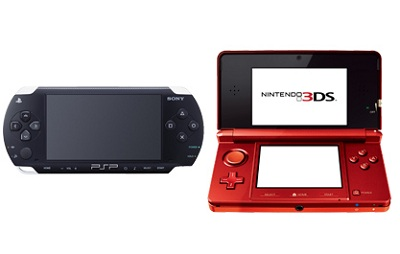

Competencias entre consolas
En la industria de los videojuegos una guerra de consolas describe la competencia entre dos o más fabricantes de consolas de videojuegos para tratar de lograr mejores ventas al consumidor a través de tecnología de consola más avanzada, una mejor selección de videojuegos y marketing general en torno a sus consolas. Si bien los fabricantes de consolas generalmente siempre intentan superar a otros fabricantes en ventas, estas guerras de consolas recurren a tácticas más directas para comparar sus ofertas directamente con las de sus competidores o menospreciar a la competencia en contraste con la suya propia y, por lo tanto, los esfuerzos de marketing han tendido a escalar en empujones de ida y vuelta.
Antecedentes y etimología
l mercado de las consolas de videojuegos comenzó en 1972 con el lanzamiento de la primera consola doméstica, la Magnavox Odyssey. A medida que más fabricantes ingresaron al mercado y la tecnología mejoró, el mercado comenzó a fusionarse en torno al concepto de generaciones de consolas, grupos de consolas con especificaciones técnicas similares que competían en el mercado de consumo. Desde 1972, ha habido nueve generaciones de consolas de este tipo, con dos o tres fabricantes dominantes controlando el mercado como un oligopolio.
PSP y Nintendo DS; los dos púgiles de inicio de siglo XXI
Game Boy Pocket, Game Boy Light, Game Boy Color, Game Boy Advance, Game Boy Advance SP siguiente paso de Nintendo fue la Nintendo DS, publicada por primera vez en noviembre de 2004, el mismo mes que Sony Interactive Entertainment decidiera lanzar la PlayStation Portable, conocida popularmente como la PSP.
Nintendo vuelve a ganar en el duelo entre Nintendo 3DS y PS Vita
El proceso de progresivo desarrollo fue mucho más corto para Sony, que tan solo estrenó una versión
mejorada de la PSP: la PlayStation Vita. Con los bordes más redondeados y mejoras evidentes en sus
características técnicas, la consola portátil de la empresa japonesa volvió a coincidir (no por
accidente) con el estreno de la Nintendo 3DS, el innovador artefacto de su gran competidor.
Esta PS Vita no tuvo tanto éxito como su predecesora, tras el lógico hype de su lanzamiento en diciembre
de 2011. Llegó casi un año después de una Nintendo 3DS que también resultó algo decepcionante para su
público. Si bien esta consola se fue hasta los 77 millones de unidades vendidas, la publicación de
videojuegos exclusivos para ella (discriminando directamente las versiones pasadas de Nintendo DS)
generó muchas quejas.
Steam Deck, ¿nada que hacer contra la Nintendo Switch?
¿Se supone que Nintendo Switch debe temer por el lanzamiento de la Steam Deck?. Mucho se ha
hablado sobre esta nueva competencia que llegará al mercado en diciembre de 2021, pero las posibilidades
reales de que la nueva consola de Valve Corporation desbanque a la híbrida japonesa son escasas. Hay que
ser realistas y, si nada ha podido tumbar a Nintendo en 30 años, es altamente improbable que lo haga
un nuevo invento norteamericano..
Más potencia, más funciones, más juegos... Sí, evidentemente la Steam Deck ha aterrizado con mucha
fuerza y ganas de quedarse, pero los públicos se encuentran mucho más segmentados de lo que
probablemente querría Valve. Deberemos armarnos de paciencia y esperar al lanzamiento oficial de esta
innovadora consola, que pretende marcar un antes y un después en la industria..